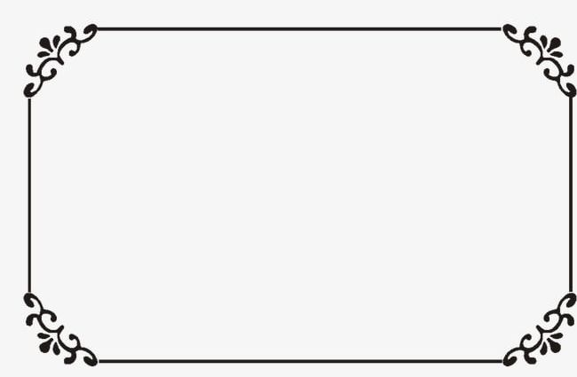

Place the border image 10 pixels outside the border edges of an element:
Place the border image 10 pixels outside the border edges of an element:
Here is the original image:
Note: Internet Explorer 10, and earlier versions, do not support the border-image property.